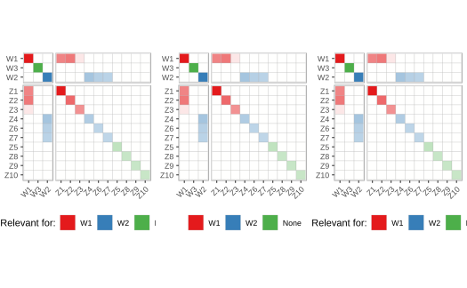

Plotting Covariance Matrix
plot_cov(sobj, type = "relpos", ordering = TRUE, facetting = TRUE)
| sobj | A simrel object |
|---|---|
| type | Type of covariance matrix - can take two values |
| ordering | TRUE for ordering the covariance for block diagonal display |
| facetting | TRUE for facetting the predictor and response space. FALSE will give a single facet plot |
A covariance plot
Sæbø, S., Almøy, T., & Helland, I. S. (2015). simrel—A versatile tool for linear model data simulation based on the concept of a relevant subspace and relevant predictors. Chemometrics and Intelligent Laboratory Systems, 146, 128-135.
Almøy, T. (1996). A simulation study on comparison of prediction methods when only a few components are relevant. Computational statistics & data analysis, 21(1), 87-107.
Rimal, R., Almøy, T., & Sæbø, S. (2018). A tool for simulating multi-response linear model data. Chemometrics and Intelligent Laboratory Systems, 176, 1-10.
sobj <- simrel(n = 100, p = 10, q = c(4, 5), relpos = list(c(1, 2, 3), c(4, 6, 7)), m = 3, R2 = c(0.8, 0.7), ypos = list(c(1, 3), 2), gamma = 0.7, type = "multivariate") p1 <- plot_cov(sobj, type = "relpos", facetting = FALSE) p2 <- plot_cov(sobj, type = "rotation", facetting = FALSE) p3 <- plot_cov(sobj, type = "relpred", facetting = FALSE) gridExtra::grid.arrange(p1, p2, p3, ncol = 3)